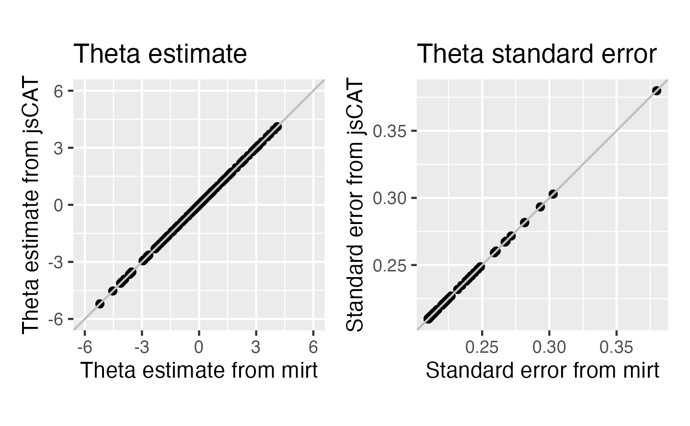
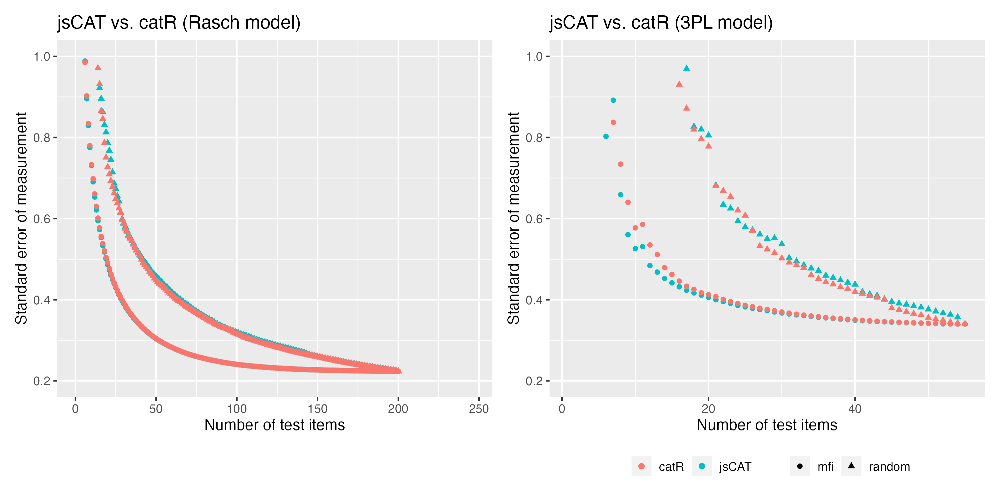

@bdelab/jscat - v5.3.2


jsCAT: Computer Adaptive Testing in JavaScript
A library to support IRT-based computer adaptive testing in JavaScript
Installation
You can install jsCAT from npm with
npm i @bdelab/jscat
Usage
For existing jsCAT users: to make your applications compatible to the updated jsCAT version, you will need to pass the stimuli in the following way:
// import jsCAT
import { Cat } from '@bdelab/jscat';
// create a Cat object with MLE estimator
const cat1 = new CAT({method: 'MLE', itemSelect: 'MFI', nStartItems: 0, theta: 0, minTheta: -6, maxTheta: 6})
// create a Cat object with EAP estimator with normal distribution
const cat2 = new CAT({method: 'eap', itemSelect: 'MFI', nStartItems: 0, theta: 0, minTheta: -6, maxTheta: 6, priorDist: 'norm', priorPar: [0, 1]})
// create a Cat object with EAP estimator with unirform distribution
const cat3 = new CAT({method: 'eap', itemSelect: 'MFI', nStartItems: 0, theta: 0, minTheta: -6, maxTheta: 6, priorDist: 'unif', priorPar: [-4, 4]})
// option 1 to input stimuli:
const zeta = {[{discrimination: 1, difficulty: 0, guessing: 0, slipping: 1}, {discrimination: 1, difficulty: 0.5, guessing: 0, slipping: 1}]}
// option 2 to input stimuli:
const zeta = {[{a: 1, b: 0, c: 0, d: 1}, {a: 1, b: 0.5, c: 0, d: 1}]}
const answer = {[1, 0]}
// update the ability estimate by adding test items
cat.updateAbilityEstimate(zeta, answer);
const currentTheta = cat1.theta;
const currentSeMeasurement = cat1.seMeasurement;
const numItems = cat1.nItems;
// find the next available item from an input array of stimuli based on a selection method
> **Note:** For existing jsCAT users: To make your applications compatible with the updated jsCAT version, you will need to pass the stimuli in the following way:
const stimuli = [{ discrimination: 1, difficulty: -2, guessing: 0, slipping: 1, item = "item1" },{ discrimination: 1, difficulty: 3, guessing: 0, slipping: 1, item = "item2" }];
const nextItem = cat1.findNextItem(stimuli, 'MFI');
Validation
Validation of theta estimate and theta standard error
Reference software: mirt (Chalmers, 2012)

Validation of MFI algorithm
Reference software: catR (Magis et al., 2017)

Clowder Usage Guide
The Clowder class is a powerful tool for managing multiple Cat instances and handling stimuli corpora in adaptive testing scenarios. This guide provides an overview of integrating Clowder into your application, with examples and explanations for key features.
Key Changes from Single Cat to Clowder
Why Use Clowder?
- Multi-CAT Support: Manage multiple
Catinstances simultaneously. - Centralized Corpus Management: Handle validated and unvalidated items across Cats.
- Advanced Trial Management: Dynamically update Cats and retrieve stimuli based on configurable rules.
- Early Stopping Mechanisms: Optimize testing by integrating conditions to stop trials automatically.
Transitioning to Clowder
1. Replacing Single Cat Usage
Single Cat Example:
const cat = new Cat({ method: 'MLE', theta: 0.5 });
const nextItem = cat.findNextItem(stimuli);
Clowder Equivalent:
const clowder = new Clowder({
cats: { cat1: { method: 'MLE', theta: 0.5 } },
corpus: stimuli,
});
const nextItem = clowder.updateCatAndGetNextItem({
catToSelect: 'cat1',
});
2. Using a Corpus with Multi-Zeta Stimuli
The Clowder corpus supports multi-zeta stimuli, allowing each stimulus to define parameters for multiple Cats. Use the following tools to prepare the corpus:
Fill Default Zeta Parameters:
import { fillZetaDefaults } from './corpus';
const filledStimuli = stimuli.map((stim) => fillZetaDefaults(stim));
What is fillZetaDefaults?
The function fillZetaDefaults ensures that each stimulus in the corpus has Zeta parameters defined. If any parameters are missing, it fills them with the default Zeta values.
The default values are:
export const defaultZeta = (desiredFormat: 'symbolic' | 'semantic' = 'symbolic'): Zeta => {
const defaultZeta: Zeta = {
a: 1,
b: 0,
c: 0,
d: 1,
};
return convertZeta(defaultZeta, desiredFormat);
};
- If desiredFormat is not specified, it defaults to 'symbolic'.
- This ensures consistency across different stimuli and prevents errors from missing Zeta parameters.
- You can pass 'semantic' as an argument to convert the default Zeta values into a different representation.
Validate the Corpus:
import { checkNoDuplicateCatNames } from './corpus';
checkNoDuplicateCatNames(corpus);
Filter Stimuli for a Specific Cat:
import { filterItemsByCatParameterAvailability } from './corpus';
const { available, missing } = filterItemsByCatParameterAvailability(corpus, 'cat1');
3. Adding Early Stopping
Integrate early stopping mechanisms to optimize the testing process.
Example: Stop After N Items
import { StopAfterNItems } from './stopping';
const earlyStopping = new StopAfterNItems({
requiredItems: { cat1: 2 },
});
const clowder = new Clowder({
cats: { cat1: { method: 'MLE', theta: 0.5 } },
corpus: stimuli,
earlyStopping: earlyStopping,
});
Early Stopping Criteria Combinations
To clarify the available combinations for early stopping, here’s a breakdown of the options you can use:
1. Logical Operations
You can combine multiple stopping criteria using one of the following logical operations:
and: All conditions need to be met to trigger early stopping.or: Any one condition being met will trigger early stopping.only: Only a specific condition is considered (you need to specify the cat to evaluate).
2. Stopping Criteria Classes
There are different types of stopping criteria you can configure:
StopAfterNItems: Stops the process after a specified number of items.StopOnSEMeasurementPlateau: Stops if the standard error (SE) of measurement remains stable (within a defined tolerance) for a specified number of items.StopIfSEMeasurementBelowThreshold: Stops if the SE measurement drops below a set threshold.
How Combinations Work
You can mix and match these criteria with different logical operations, giving you a range of configurations for early stopping. For example:
- Using
andwith bothStopAfterNItemsandStopIfSEMeasurementBelowThresholdmeans stopping will only occur if both conditions are satisfied. - Using
orwithStopOnSEMeasurementPlateauandStopAfterNItemsallows early stopping if either condition is met.
Clowder Example
Here’s a complete example demonstrating how to configure and use Clowder:
import { Clowder } from './clowder';
import { createMultiZetaStimulus, createZetaCatMap } from './utils';
import { StopAfterNItems } from './stopping';
// Define the Cats
const catConfigs = {
cat1: { method: 'MLE', theta: 0.5 }, // Cat1 uses Maximum Likelihood Estimation
cat2: { method: 'EAP', theta: -1.0 }, // Cat2 uses Expected A Posteriori
};
// Define the corpus
const corpus = [
createMultiZetaStimulus('item1', [
createZetaCatMap(['cat1'], { a: 1, b: 0.5, c: 0.2, d: 0.8 }),
createZetaCatMap(['cat2'], { a: 2, b: 0.7, c: 0.3, d: 0.9 }),
]),
createMultiZetaStimulus('item2', [createZetaCatMap(['cat1'], { a: 1.5, b: 0.4, c: 0.1, d: 0.85 })]),
createMultiZetaStimulus('item3', [createZetaCatMap(['cat2'], { a: 2.5, b: 0.6, c: 0.25, d: 0.95 })]),
createMultiZetaStimulus('item4', []), // Unvalidated item
];
// Optional: Add an early stopping strategy
const earlyStopping = new StopAfterNItems({
requiredItems: { cat1: 2, cat2: 2 },
});
// Initialize the Clowder
const clowder = new Clowder({
cats: catConfigs,
corpus: corpus,
earlyStopping: earlyStopping,
});
// Running Trials
const nextItem = clowder.updateCatAndGetNextItem({
catToSelect: 'cat1',
catsToUpdate: ['cat1', 'cat2'], // Update responses for both Cats
items: [clowder.corpus[0]], // Previously seen item
answers: [1], // Response for the previously seen item
additionalItemsToRemove: [clowder.corpus[3]], // Optional: Remove items without updating ability estimates
});
console.log('Next item to present:', nextItem);
// Check stopping condition
if (clowder.earlyStopping?.earlyStop) {
console.log('Early stopping triggered:', clowder.stoppingReason);
}
4. Managing Item Removal with additionalItemsToRemove
The additionalItemsToRemove parameter allows you to remove items from the remaining corpus without updating ability estimates. This is useful for excluding items that should not be presented again (e.g., items that were skipped, flagged, or excluded for other reasons).
Key Characteristics:
- Does not affect ability estimates: Items in
additionalItemsToRemoveare removed from the corpus but do not contribute to Cat ability updates. - Does not add to seenItems: These items are not tracked in the
seenItemsarray. - Cumulative removal: Multiple calls to
updateCatAndGetNextItemwithadditionalItemsToRemovewill cumulatively remove items.
Example Usage:
// Remove items that were skipped or flagged without updating ability estimates
const nextItem = clowder.updateCatAndGetNextItem({
catToSelect: 'cat1',
catsToUpdate: ['cat1'],
items: [clowder.corpus[0]], // Item that was presented and answered
answers: [1],
additionalItemsToRemove: [clowder.corpus[2], clowder.corpus[3]], // Items to exclude without updating ability
});
// After this call:
// - clowder.corpus[0] is in seenItems and was used to update cat1's ability
// - clowder.corpus[2] and clowder.corpus[3] are removed from remainingItems but NOT in seenItems
// - Only clowder.corpus[1] and any other items remain available for selection
By integrating Clowder, your application can efficiently manage adaptive testing scenarios with robust trial and stimuli handling, multi-CAT configurations, and stopping conditions to ensure optimal performance.
References
-
Chalmers, R. P. (2012). mirt: A multidimensional item response theory package for the R environment. Journal of Statistical Software.
-
Magis, D., & Barrada, J. R. (2017). Computerized adaptive testing with R: Recent updates of the package catR. Journal of Statistical Software, 76, 1-19.
-
Lucas Duailibe, irt-js, (2019), GitHub repository, https://github.com/geekie/irt-js
License
jsCAT is distributed under the ISC license.
Contributors
jsCAT is contributed by Wanjing Anya Ma, Emily Judith Arteaga Garcia, Jason D. Yeatman, and Adam Richie-Halford.
Citation
If you are use jsCAT for your web applications, please cite us: Ma, W. A., Richie-Halford, A., Burkhardt, A. K., Kanopka, K., Chou, C., Domingue, B. W., & Yeatman, J. D. (2025). ROAR-CAT: Rapid Online Assessment of Reading ability with Computerized Adaptive Testing. Behavior Research Methods, 57(1), 1-17. https://doi.org/10.3758/s13428-024-02578-y
@article{ma2025roar, title={ROAR-CAT: Rapid Online Assessment of Reading ability with Computerized Adaptive Testing}, author={Ma, Wanjing Anya and Richie-Halford, Adam and Burkhardt, Amy K and Kanopka, Klint and Chou, Clementine and Domingue, Benjamin W and Yeatman, Jason D}, journal={Behavior Research Methods}, volume={57}, number={1}, pages={1--17}, year={2025}, publisher={Springer} }